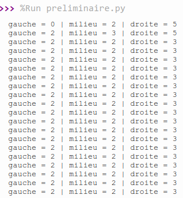
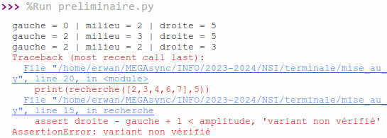
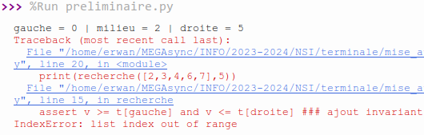

Activité préliminaire¶
Source
Inspiré d'une activité du Hachette NSI Terminale.
Ajouter des traces¶
La fonction suivante a été écrite par un élève de première suite à une consigne de son professeur pour implémenter l’algorithme de recherche dichotomique.
La docstring, présenté dans la fonction, spécifie ce qu'elle est censée faire.
def recherche(t, v):
''' Renvoie l'indice de l'élément v dans le tableau t.
Si l'élément n'est pas trouver, renvoie -1.
:param t: (list) un tableau d'entiers
:param v: (int) l'entier à chercher
:return: (int) l'indice de l'élément s'il est trouvé, ou -1 sinon '''
gauche = 0
droite = len(t)
while gauche < droite:
milieu = (gauche+droite) // 2
if t[milieu] < v:
gauche = milieu
else:
droite = milieu
return droite
Exercice 1
Copier le programme ci-dessus dans l’éditeur de script de Thonny
- Tester la fonction recherche avec le tableau
[2, 3, 4, 6, 7]et la valeur 5. Qu’observe-t-on ? La fonction est-elle correcte ? -
Ajouter des instructions
Autrement dit, soitprintpour afficher les valeurs des variables au cours de l’exécution. Pour vous aider, vous pouvez également utiliser unassertpour tester l'invariant, ainsi qu'unassertpour tester le variant.
On rappelle l'invariant de la recherche dichotomique :
« Si l'élément recherchévest présent dans le tableau, alorsvest compris entre l'élément d'indicegaucheet l'élément d'indicedroite».
On peut écrire l'assertion vérifiant cet invariant de la manière suivante :
vn'est pas dans le tableau, soit (sivest dans le tableau)vest compris entre les éléments d'indicesgaucheetdroite.
Pour ce qui est du variant, il s'agit dedroite - gauche + 1(quantité positive et strictement décroissante). Il faut vérifier que cette quantité diminue à chaque itération de la boucle. -
Identifier la ou les erreurs à l’aide de ces traces et les corriger.
Corrigé détaillé exercice 1
- Lorsque l'on exécute la fonction telle qu'elle est donnée, on se rend compte que l'exécution ne se termine pas. On peut donc deviner que la boucle
whileitère indéfiniment. - En ajoutant une instruction
printpour voir le contenu des variablesgauche,milieuetdroite, on voit qu'à un certain stade, les valeurs degaucheet dedroitene changent plus, ainsi la condition d'arrêt duwhilen'est jamais rencontrée :

Si l'on teste notre variantdroite - gauche + 1avec une assertion, en modifiant le code de la manière suivante :
En exécutant le programme, on obtient unedef recherche(t, v): gauche = 0 droite = len(t) amplitude = droite - gauche + 1 # On stocke la valeur initiale du variant while gauche < droite: milieu = (gauche+droite) // 2 print(f'gauche = {gauche} | milieu = {milieu} | droite = {droite}') if t[milieu] < v: gauche = milieu else: droite = milieu assert droite - gauche + 1 < amplitude, 'variant non vérifié' amplitude = droite - gauche return droiteassertionError: notre variant n'est pas vérifié, ce qui prouve donc que le programme ne se termine pas.

Par ailleurs, si on teste l'invariant, en rajoutant une assertion de la manière suivante :On obtient l'erreur suivante :def recherche(t, v): gauche = 0 droite = len(t) amplitude = droite - gauche + 1 # On stocke la valeur initiale du variant while gauche < droite: milieu = (gauche+droite) // 2 print(f'gauche = {gauche} | milieu = {milieu} | droite = {droite}') if t[milieu] < v: gauche = milieu else: droite = milieu assert v >= t[gauche] and v <= t[droite] ### ajout invariant assert droite - gauche + 1 < amplitude, 'variant non vérifié' amplitude = droite - gauche return droite

La valeur recherchée doit toujours être comprise entre l'élément d'indicegaucheet l'élément d'indicedroite. Or, l'élément d'indicedroitevaut initialementlen(t), alors que sa valeur devrait correspondre à l'indice du dernier élément du tableau, soitlen(t) - 1, d'où l'erreur obtenue :len(t)ne correspond pas à un indice du tableau. - Finalement, voici une liste des différentes erreurs que comporte la fonction donnée :
droitedoit être égal à l'indice du dernier élément du tableau, soitlen(t) - 1- Lorsque
t[milieu] < v(l'élément recherché est plus grand que l'élément du milieu), on sait que l'on doit ré-effectuer la recherche dans la partie du tableau à droite de l'élément du milieu. Or, dans la fonction donnée,gaucheprend la valeur de l'indice stocké dansmilieu, alors que l'on sait que l'élément associé à l'indicemilieune peut pas être l'élément recherché.gauchedoit donc prendre la valeur de l'indice juste à droite demilieu, soitmilieu + 1. - Lorsque
t[milieu] > v(l'élément recherché est plus petit que l'élément du milieu), on sait que l'on soit ré-effectuer la recherche dans la partie du tableau à gauche de l'élément du milieu. Donc,droitedoit prendre la valeur de l'indice juste à gauche demilieu, soitmilieu - 1. - Actuellement, la boucle continue tant que
gauche < droite. Or, on oublie le cas oùgauche = droite, auquel cas on doit rester dans la boucle. On ne doit sortir de la boucle que lorsquegauche > droite. Ainsi, la condition duwhiledoit devenir :gauche <= droite. - On oublie de traiter un cas à l'intérieur du
while: celui où l'élémentt[milieu]correspond à l'élementvrecherché : dans ce cas, selon la docstring, on doit renvoyer l'indice de l'élément trouvé, c'est à diremilieu. - Enfin, lorsque l'on sort de la boucle
while, c'est-à-dire lorsque l'élément recherche n'a pas été trouvé, la docstring indique que l'on doit renvoyer-1, et non pas l'indice stocké dansdroite. Il faut en effet toujours faire en sorte que notre fonction respecte la spécification, c'est-à-dire qu'elle fait bien ce qui est attendu.
Finalement, voici la bonne implémentation de cette fonction, après avoir corrigé toutes ces erreurs, ajouté des print pour afficher une trace d'exécution, ajouté une assertion pour le variant et pour l'invariant :
def recherche(t, v):
print(t, v) # TRACE
gauche = 0
droite = len(t) - 1
amplitude = droite - gauche + 1 # On stocke la valeur initiale du variant
while gauche <= droite:
milieu = (gauche+droite) // 2
print(f'gauche = {gauche} | milieu = {milieu} | droite = {droite}')
if t[milieu] == v:
return milieu
elif t[milieu] < v:
gauche = milieu + 1
else:
droite = milieu - 1
assert v not in t or (v >= t[gauche] and v <= t[droite]) ### ajout invariant
print(f'variant = {droite - gauche + 1}')
assert droite - gauche + 1 < amplitude, 'variant non vérifié'
amplitude = droite - gauche
return -1
Fonction finale uniquement exercice 1
Voici la bonne implémentation de cette fonction, après avoir corrigé toutes les erreurs, ajouté des print pour afficher une trace d'exécution, ajouté une assertion pour le variant et pour l'invariant :
def recherche(t, v):
''' Renvoie l'indice de l'élément v dans le tableau t.
Si l'élément n'est pas trouver, renvoie -1.
:param t: (list) un tableau d'entiers
:param v: (int) l'entier à chercher
:return: (int) l'indice de l'élément s'il est trouvé, ou -1 sinon '''
print(t, v) # TRACE
gauche = 0
droite = len(t) - 1
amplitude = droite - gauche + 1 # On stocke la valeur initiale du variant
while gauche <= droite:
milieu = (gauche+droite) // 2
print(f'gauche = {gauche} | milieu = {milieu} | droite = {droite}')
if t[milieu] == v:
return milieu
elif t[milieu] < v:
gauche = milieu + 1
else:
droite = milieu - 1
assert v not in t or (v >= t[gauche] and v <= t[droite]) ### ajout invariant
print(f'variant = {droite - gauche + 1}')
assert droite - gauche + 1 < amplitude, 'variant non vérifié'
amplitude = droite - gauche
return -1
Utiliser un débogueur¶
L’implémentation suivante de l’algorithme de tri par sélection contient elle aussi des erreurs.
def tri(t):
''' Effectue un tri par sélection en place du tableau entré.
:param t: (list) Une liste d'éléments à trier
:return: (None) On ne renvoie rien '''
for i in range(len(t)):
jmin = i
for j in range(i, len(t)):
if t[j] <= t[jmin]:
jmin = j
if jmin != i:
t[i] = t[jmin]
t[jmin] = t[i]
Exercice 2
Nous allons utiliser un outil de mise au point appelé débogueur (ou debugger en anglais).
- Copier le programme ci-dessus dans l’éditeur de script de Thonny et ajouter une instruction qui appelle la fonction
triavec le tableau[4, 2, 6, 7, 1, 8]. - Exécuter le programme. Qu’observe-t-on ?
- Lancer le programme avec le débogueur de Thonny (l'icône juste à droite de celle permettant d'exécuter un script). Vous pouvez également mettre des points d'arrêt sur des lignes précises pour pouvoir exécuter votre programme normalement et ne l'arrêter qu'à ces points définis en vue du déboguage.
Un autre outil bien sympathique pour vous aider à déboguer un programme Python Tutor. - Identifier la ou les erreurs à l’aide du débogueur et les corriger.